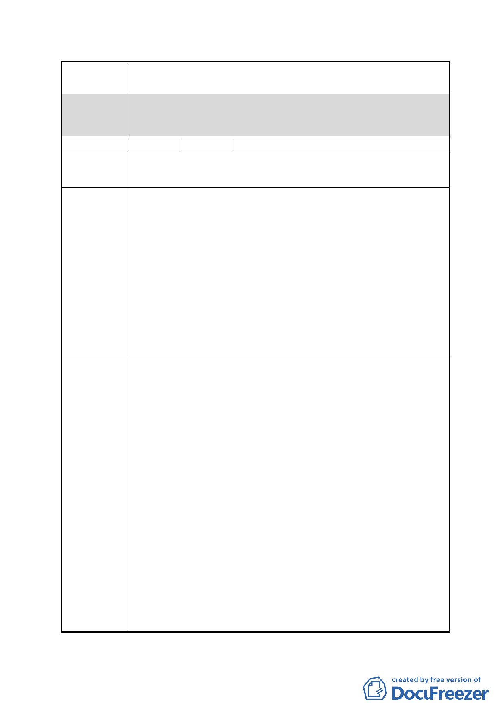

案 名 擬定臺北市南港區鐵路地下化沿線土地細部計畫案
都委會 1.本陳情地點非屬修正後細部計畫範圍。
決議 2.同意以市府回應說明辦理。
編號
13 陳情人 刁承德、孔張阿菊、林金洲、葉俊家
南港路二段 23 巷
陳情地點
陳情理由
建議辦法
我們是一群居住位在 D 區的居民，自擬定此規劃案後，本巷
居民終日心生恐懼，人心惶惶，因為在規劃案後續執行階段，
就將我們在此居住近 40 年來辛勤勞力掙來的自有房屋與土
地，在該計畫案遠景糖衣包裹下被犧牲掉了，我們真的很沈
痛，過往至今本區是工二工業區，而本巷自建地取得新建房
屋完成後迄今一直是居家生活用途，如今一經規劃為商業
區，結果下場就是要剝奪我們自有土地、房子，試問往後本
巷住戶住哪？結果得到的答覆是沒有辦法，豈不與現今市長
您推動為臺北市民便民為民設想的目標及宗旨背道而馳呢！
請為我們這些小市民想一想，對此，現況面臨之危機，本巷
住戶提出下列幾點意見。
1.本巷住戶適用「免予回饋」條款：
依據「修訂臺北市主要計畫商業區（通盤檢討）計畫案內有
關商業區變更回饋規定」明文規定，為配合重大政策及產業
發展需要，得視個案需要循都市計畫程序，經臺北市都市計
畫委員會同意後，免予回饋。故南港區南港段四小段本巷居
民（小地主）應適用「免予回饋」土地等規定。
2.保證原址原地分回本巷居民原持有土地面積：
俾使本巷居民土地達到最小 500 平方公尺以上建地面積，以
求小地主們能於原址原地重建繼續在南港生活下去。
3.最小建築面積給予基準容積 15％獎勵規模獎勵：
以達計畫案中自地自建門檻面積及免遭大財團吞食之虞。
4.建蔽率提升至 65％：
經瞭解，本區一經變更為商業區，對現有住戶未蒙其利先受
其害，以求給予妥適之住戶居住空間。
5. 若 無 法 保 證 給 予 本 巷 全 體 居 民 應 有 之 居 住 權 益 與 生 活 保
障，本巷居民將堅持不參與都更，誓死抗爭到底，保衛家園，
因退守一步，我們將流離失所，要在這鄉親土親落腳生根的
南港繼續生活下去。
- 26 -